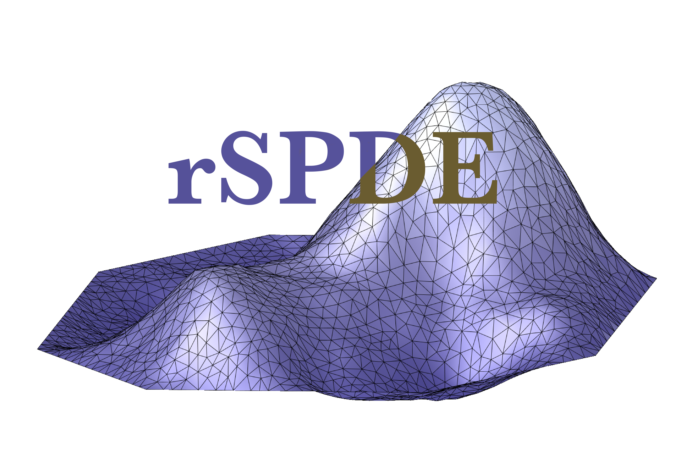

Get the precision matrix of CBrSPDEobj2d objects
Source:R/fractional.computations.R
precision.CBrSPDEobj2d.RdFunction to get the precision matrix of a CBrSPDEobj2d object
Usage
# S3 method for class 'CBrSPDEobj2d'
precision(
object,
user_nu = NULL,
user_hx = NULL,
user_hy = NULL,
user_hxy = NULL,
user_sigma = NULL,
user_m = NULL,
...
)Arguments
- object
The covariance-based rational SPDE approximation, computed using
matern2d.operators()- user_nu
If non-null, update the shape parameter of the covariance function.
- user_hx
If non-null, update the hx parameter.
- user_hy
If non-null, update the hy parameter.
- user_hxy
If non-null, update the hxy parameter.
- user_sigma
If non-null, update the standard deviation of the covariance function.
- user_m
If non-null, update the order of the rational approximation, which needs to be a positive integer.
- ...
Currently not used.
Examples
library(fmesher)
n_loc <- 2000
loc_2d_mesh <- matrix(runif(n_loc * 2), n_loc, 2)
mesh_2d <- fm_mesh_2d(loc = loc_2d_mesh, cutoff = 0.03, max.edge = c(0.1, 0.5))
op <- matern2d.operators(mesh = mesh_2d)
Q <- precision(op)